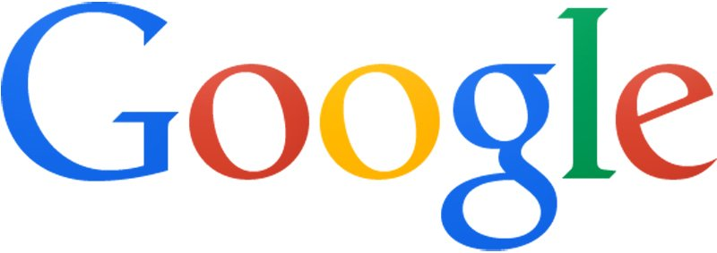
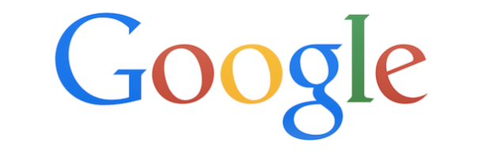
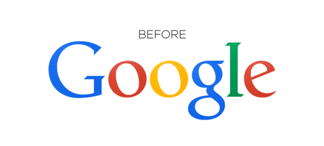
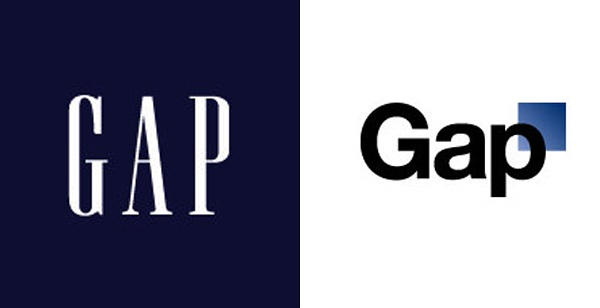
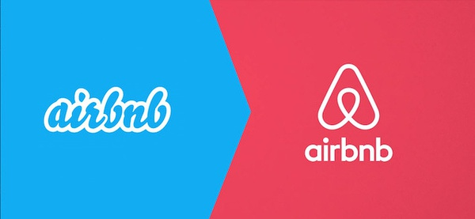
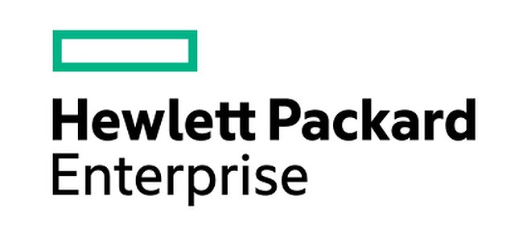

「少しの備えもなく、少しの迷いもなく、あなたはこうして私の世界に現れ、私に驚きをもたらし、心を抑えきれない。」
そう、この歌の歌詞のように、見慣れた Google が突然ロゴを変更しました。6つの文字がサンセリフ体に変わり、以前よりも柔らかく見えます。Google はこのフォントを「Product San」と呼んでいます。
Google のバイスプレジデント兼プロダクトマネージャーである Tamar Yehoshua 氏は、新しいロゴのデザインは「シンプルで、すっきりしていて、カラフルで、フレンドリー」であり、主に複数の端末の視覚的ニーズに適応するためだと述べています。旧ロゴのデザインは PC のみを考慮していました。確かに、旧版の Google のデザインはスマートフォンや車載などの画面ではあまりはっきりせず、線がやや細いため視覚的なインパクトが強くありませんでした。
しかし、私はこれが「大手」Alphabet のデザインスタイルに「近づく」ためのものだと信じています。

ロゴの微調整も含めれば、Google は実際には何度もロゴを変更してきました。ただ、これほど大きく変化した例は稀です。
Google は2014年に一度変更しました。こんな感じです：

Google は2013年にも一度変更しました。こんな感じです：

違いはどこにあるのかって？

2010年から2013年の間、フラットデザインはまだ流行ではありませんでした。Google がまだフラット化されていない頃、ロゴはこんな感じでした：

多くの中国国内の人々はこのロゴに深い印象を持っています。なぜなら、フラットデザイン化の後、Google はすでに中国から撤退していたからです。
実際、Google が最も長く使用したロゴは、立体的で影付きのセリフ体デザインです。それがこれです：

それは1999年から2010年まで使用されました。
1998年、Google 社が正式に設立されました。しかし当時のロゴは……

本当に実子なのか！ Google の後ろには「！」が付いています。これは間違いなく、当時のインターネットの巨人「Yahoo!」への敬意を表したものです。
このロゴをもとに、Google 初の祝日ロゴ「バーニングマン Doodle」が誕生しました：
しかしこのロゴはまだ見られる方です。1997年、Google が初めて登場したときはこんな感じでした……

しかし、Google がまだ「Google」と呼ばれていなかった頃は……

この毛むくじゃらの手をロゴにするとはどういう意味だ……
2014年版ロゴで作られた最後の Google Doodle は、2015年全米オープン開幕を記念したものでした：

一方、2015年の新ロゴで最初の Doodle は、新しいロゴを表現したものでした：

今回の Google のロゴ変更で最大の変化は、サンセリフ体の使用です。
サンセリフ体（Sans-serif）は、欧文においてセリフ（ひげ飾り）のない書体を指し、漢字フォントのゴシック体に相当します。コンピューター上で代表的なサンセリフ体としては、Arial、Mac では Helvetica（iOS 9 および OS X 10.11 以降、Apple デバイスのデフォルトフォントは「苹方」に変更されましたが、これもサンセリフ体です）があります。セリフ体とは逆です。この種の書体は通常、機械的で均一な線を持ち、同じ曲率、直線的な線、鋭い角を持つことが多く、私たちがよく見る Times New Roman のようなものです。

*1枚の図でサンセリフ体とセリフ体の違いを説明します。左はセリフ体で、はっきりとした角があります。右はサンセリフ体です。
一般的に、伝統的な本文印刷では、セリフ体（サンセリフ体と比較して）の方が読みやすさに優れると考えられています。特に長い段落の文章では、セリフは読む際の視覚的な手がかりを増やします。一方、サンセリフ体は見出し、短い文章、または大衆向けの読み物によく使われます。歴史を感じさせるブランドの中には、LV、Gucci、Ermenegildo Zegna、Yves Saint Laurent、そして『ニューヨーク・タイムズ』など、今でもセリフ体のロゴを維持しているところがあります。
厳格でフォーマルなセリフ体に比べ、サンセリフ体はカジュアルでリラックスした印象を与えます。現代の生活や流行の変化に伴い、現在の人々はサンセリフ体を好むようになってきています。「よりクリーン」で、より現代的に見えるからです。サンセリフ体を使用したロゴデザインはますます増えており、特にインターネット企業では顕著です。Google のように、これまでずっとセリフ体を使ってきた企業は実際には多くありません。

しかし、セリフ体からサンセリフ体への変更は一定のリスクを伴います。なぜなら、一般の人々への視覚的インパクトが非常に大きいからです。アメリカの人々に愛されているファストファッションブランド Gap は、2010年10月に突然新しいロゴに変更しました。そして、20年以上使用してきた旧ロゴの青地に白文字のデザインを一挙に置き換えました。しかし、最も顕著な変化は、セリフ体からサンセリフ体への変更でした。この予告なしの決定は、その後急速に広報危機へと発展し、ソーシャルネットワーク上は Gap の新しい商標への批判が溢れました。わずか11日後、Gap は旧ロゴに戻すことを決定しました。
インターネット企業の中にも、セリフ体からサンセリフ体に変更した例は少なくありません。そのほとんどは論争を引き起こすことなく、むしろ会社がより若々しくなったと感じられています。例えば：


出典：TECH2IPO創見
クリックしてノートを共有
<p style="font-size:14px;">ノートはこの記事の内容を拡張したものである必要があります！</p><br> <p style="font-size:12px;"><a href="../tougao.html" target="_blank">記事投稿は、ここをクリックしてください</a></p> <p style="font-size:14px;"><a href="./runoob-user-test-intro.html" target="_blank">登録招待コードの取得方法</a></p> <h3 class="text-muted"><i class="fa fa-info-circle" aria-hidden="true"></i> ノートを共有する前に<a href=".." class="runoob-pop">ログイン</a>が必要です！</h3> <p><a href="./runoob-user-test-intro.html" target="_blank">登録招待コードの取得方法</a></p>